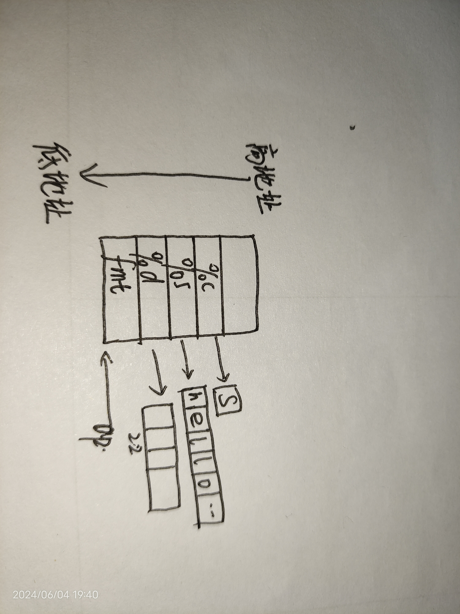

前言
使用过 C 语言的人都会知道 printf 函数，它的参数中有固定参数 format 和可变参数 ... ，那 format 后面的参数个数不确定，类型也不确定，这些参数都存放在栈中。在 format 中在特定的位置指定对应可变参数的类型，也就是根据 format 里的格式依次将数据取出
原理
所有可变参数都存放在栈中。在 format 中在特定的位置指定对应可变参数的类型，也就是根据 format 里的格式依次将数据取出。而取出的动作需要用到 va_arg va_list va_end 这些宏定义，而且取出可变参数的时候，就相当于是指针指向栈中存放数据的位置，然后将指针不断移动来取出数据。
所以就需要对应着可变参数的数量，一定要注意，一旦出现可变参数数量不对应的情况，那就会产生 crash ，主要还是由于参数的数量如果少于使用参数的数量时，就会导致访问栈内存溢出，从而导致 crash
由于参数分为两个部分：固定参数和可变参数，至少需要有一个固定参数，可变参数的数量可以有多个，声明中使用 ... 表示
va_list
1
|
typedef char * va_list;
|
实际上就是一个指针，用来指向栈中获取参数
va_start
开始获取参数，一般来说使用可变参数时，参数都会被存储在栈中，所以需要将可变参数指针指向栈中。但是一般来说，用户是没有办法访问到栈的，所以固定参数就发挥了作用，由于所有参数都保存在栈中，所以固定参数也是保存在栈中的，所以只要指针指向该固定参数那就是指向了栈。
当然还要考虑指向了栈的什么地方。由于 C 语言的传入参数的规则，当所有参数都被保存到栈中时，那它们压入战中的顺序就是从最后一个开始压栈直到第一个参数，所以第一个参数的地址是最低的，依次向上增长。
例如 printf
1
|
#define va_start(ap, v) ap = (va_list) &v
|
va_end
使得不能再指向有效地址了，也就是结束从栈中取出参数，所以这里相当于是把指向栈的指针直接指向 null 从而实现
1
|
#define va_end(ap) ap = NULL
|
va_arg
从栈中指定的位置中获取指定类型的参数，并且使得指针指向下一个参数。但是这里需要注意参数的大小
1
|
#define va_arg(ap, t) *((t *) (ap += 4)
|
上述中 ap += 4 是存在于 32 位机器上的代码，对于 64 位的机器上，这里就需要 ap += 8 。这个是由于需要保证字节对齐的原因
例如：
1
|
printf("%d, %s, %c", 23, "hello world", 'S');
|

这里存入到栈中的顺序和参数如下
由于 va_start 将指针 ap 指向了 fmt ，也就如图所示，之后取出参数的顺序是从低地址开始向上取出。这里面直接保存变量的值，但是需要注意对齐问题。对于 32 位机器上，就是以 4 字节对齐的，而在 64 位机器上是以 8 字节对齐的，这与上述的 ap += 4 和 ap += 8 是对应的
当然一定要注意，利用上述实现可变参数需要注意两个问题
_INTSIZEOF(n)
获取数据类型的大小，这个函数会注意到对齐的问题。但是对于 32 位机器上，如果使用 double 等 64 位的数据类型的时候，这个 ap += 4 就会出问题，所以就需要一个专门用来实现这个情况的函数
先看要求：当数据类型是 char, short, int, uint, float 等小于等于 4 个字节的数据结构，这时候就可以直接按照 4 个字节对齐，但是对于 double, long long int 等 64 字节的数据结构，就需要按照 8 个字节对齐。所以这个函数实现的功能应当是 1 <= sizeof(n) <= 4 时返回 4，当 5 <= sizeof(n) <= 8 时返回 8。具体实现如下
1
|
#define _INTSIZEOF(n) ((sizeof(n) + sizeof(int) - 1) & ~(sizeof(int) - 1))
|
这里来验证一下
- 1：
((1 + 3) & ~(3)) = 4
- 2：
((2 + 3) & ~(3)) = 4
- 4：
((4 + 3) & ~(3)) = 4
- 8：
((8 + 3) & ~(3)) = 8
实现
1
2
3
4
5
6
7
8
9
10
11
12
13
14
15
16
17
18
19
20
21
22
23
24
25
26
27
28
29
30
31
32
33
34
35
36
37
38
39
40
41
42
43
44
45
46
47
48
49
50
51
52
53
54
55
56
57
58
59
60
61
62
63
64
65
66
67
68
69
70
71
72
73
74
75
76
77
78
79
80
81
82
|
typedef char *va_list;
#define _INTSIZEOF(n) ((sizeof(n) + sizeof(int) - 1) & ~(sizeof(int) - 1))
#define va_start(ap, v) ap = (va_list) (&v + _INTSIZEOF(v))
#define va_arg(ap, t) *((t *) (ap += _INTSIZEOF(n), ap - _INTSIZEOF(n)))
#define va_end(ap) ap = 0
static void itoa(uint32 val, char** buf, uint32 base) {
uint32 m = val % base, i = val / base;
if (i)
itoa(i, buf, base);
if (m < 10)
*((*buf)++) = m + '0';
else
*((*buf)++) = m + 'A' - 10;
}
uint32 mysprintf(char* s, const char* fmt, va_list ap) {
int i, c, n, argc;
float f;
char *str = s, *args;
for (i = 0; (c = fmt[i] & 0xff) != 0; ++i) {
if (c != '%') {
*(str++) = c;
continue;
}
get_sign:
c = fmt[++i] & 0xff;
if (c == 0)
break;
switch (c) {
case 'd':
n = va_arg(ap, int);
itoa(n, &str, 10);
break;
case 'x':
n = va_arg(ap, int);
itoa(n, &str, 16);
break;
case 'p':
n = va_arg(ap, uint32);
itoa(n, &str, 16);
break;
case 's':
if ((args = va_arg(ap, char*)) == 0)
args = "(null)";
for (; *args;) *(str++) = *(args++);
break;
case 'c':
argc = va_arg(ap, char);
*(str++) = argc;
break;
case 'f':
argc = va_arg(ap, float);
break;
case '%':
*(str++) = '%';
goto get_sign;
default:
*(str++) = '%';
*(str++) = c;
break;
}
}
return str - s;
}
void myprintf(const char* fmt, ...) {
va_list ap;
va_start(ap, fmt);
char buf[1024] = { 0 };
uint32 len = mysprintf(buf, fmt, ap);
printf("%d\n", len);
printf("%d\n", strlen(buf));
va_end(ap);
printf(buf);
}
int main(int argc, char const* argv[]) {
myprintf("%d, %s, %c", 23, "hello world", 'S');
return 0;
}
|
后记
可变参数的原理是直接将参数存入栈中，按照对齐的原理取出数据。但是这样也会带来一些问题，由于栈是存在于内存中的，从内存中读取数据会花费比较长的时间的，但是一般函数传入参数都是存放在寄存器中的，所以相对来说，可变参数的读取会花费比较多的时间